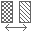

塗り潰し領域を個別に分割または1つに統合
配置済みの塗り潰し領域を分割または統合する機能です。分割では、1つの塗り潰し領域が複数の独立したエリア（境界）を含んでいる場合、それぞれを個別の独立した塗り潰し領域に分離します。統合では、複数の別々の塗り潰し領域を1つの領域にまとめます。
ビュー上で、分割したい領域（1つ以上）または統合したい領域（2つ以上）を選択します。
リボンの「注釈・詳細」パネルから「塗潰し領域 分割･統合」をクリックします。
ダイアログで操作を選択します。分割は複数エリアを持つ領域がある場合、統合は2つ以上の領域を選択している場合に選択可能です。
統合後の塗り潰しパターンをドロップダウンから選択します。選択した領域が同じパターンの場合は自動選択済みです。
処理を実行します。完了すると結果メッセージが表示されます。
📷 スクリーンショット画像をここに追加予定
複数エリアに分かれた塗り潰し領域を個別管理したい場合に、分割して整理できます。
バラバラに作成された塗り潰し領域を1つに統合し、パターンを統一できます。
統合することで1つの要素として管理でき、移動や削除などの編集が効率的になります。
自動判定：選択した領域の状態に応じて、分割・統合の可否がダイアログに自動表示されます。
パターン維持：分割時は元の塗り潰しパターンがそのまま維持されるため、見た目は変わりません。
パターン変更：統合時にパターンを変更できるため、複数領域のパターン一括変更にも活用できます。
分割するには、塗り潰し領域が複数の独立したエリア（境界）を含んでいる必要があります。
統合するには、2つ以上の塗り潰し領域を選択する必要があります。
エラーが発生した場合、トランザクションが自動ロールバックされ、元の状態に戻ります。